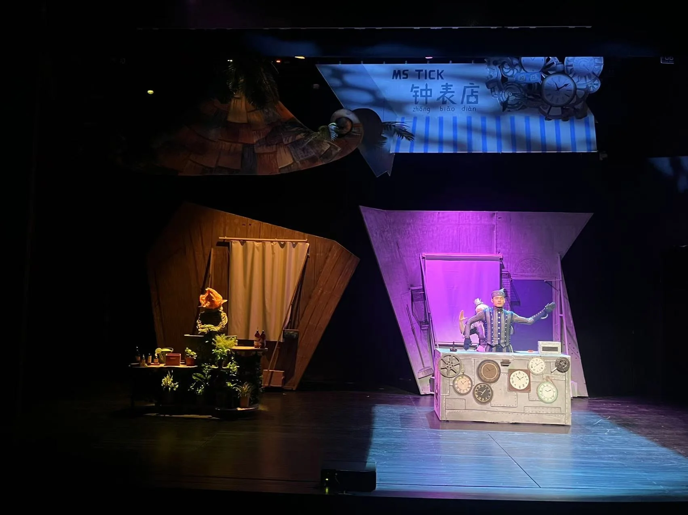
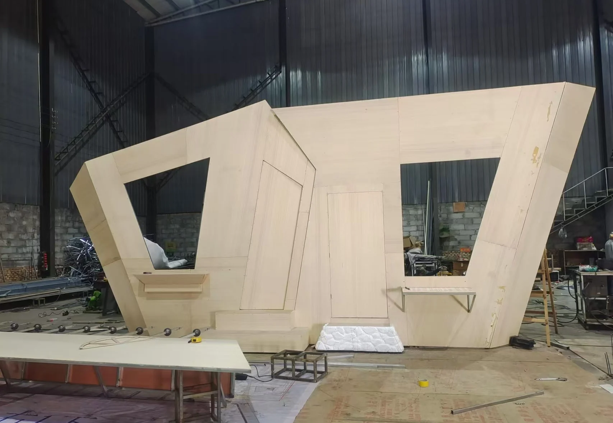
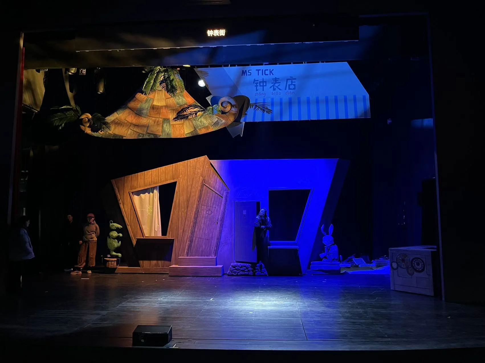
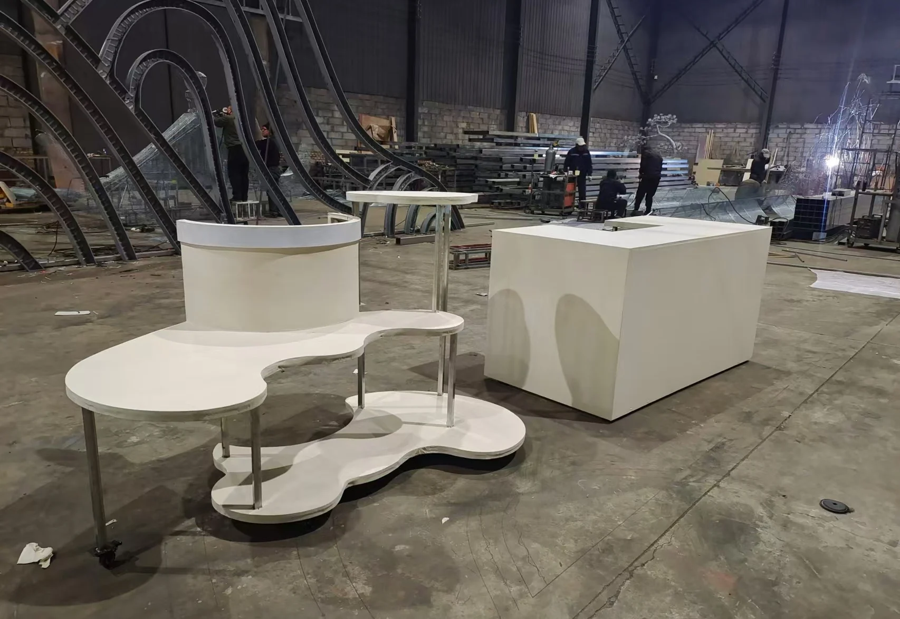
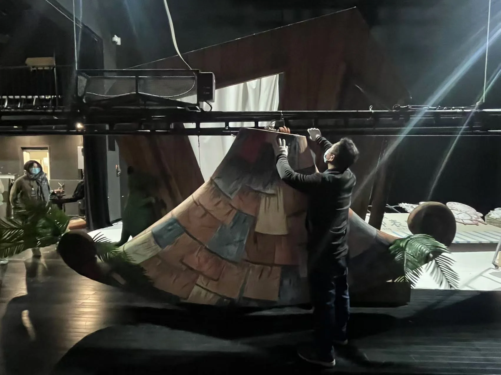

Green Fingers
Scenic Development for Live Performance

The stage for Green Fingers brings together two deliberately skewed shopfronts and oversized scenic pieces hung above them. The lean of the walls and the shapes of the openings give the street its character. At full scale, those angles also determine where the separate pieces meet.
I developed the scenic sketches into a 3D model and technical drawings for fabrication. The model let me work through the proportions and openings together. The drawings gave the workshop a way to carry those deliberately irregular shapes through to the timber build and onto the stage.
- Role
- Technical Drafting & 3D Modelling
- Medium
- 3D Models, Technical Drawings, Built Scenery
Drawing for the workshop
I developed the initial scenic sketches into a 3D model and technical drawings for fabrication. The angled shopfronts are visible in the unfinished workshop build and again in the installed set.




Workshop and fit-up
Workshop and fit-up photographs show the scenic pieces at full scale.



